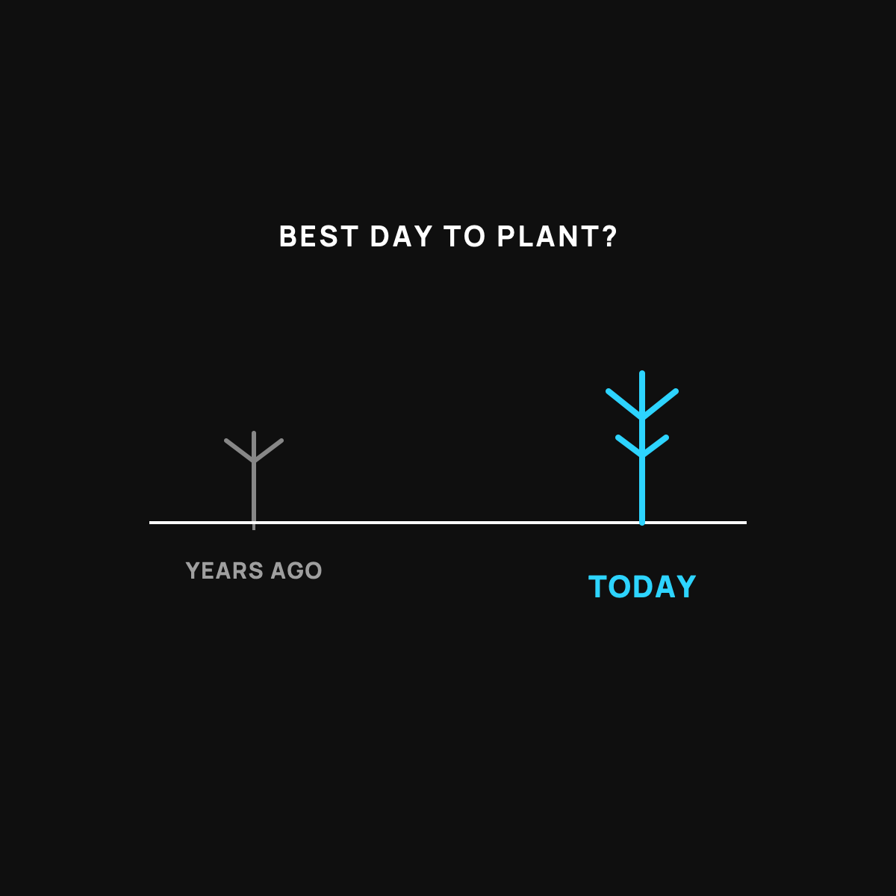

Why I Don't Try to Time the Price
The best day to plant a tree was years ago. The second best is today.
I don't try to time the price because almost nobody can, not the pros on TV, not the billion-dollar funds, not your confident buddy. People who wait for the perfect price mostly watch from the sidelines. Instead I buy a small fixed amount on a schedule and let time average it out. Calm beats clever.

People ask me if they should wait for the price to drop before they buy. It's a fair question. It's also a trap, and I've watched a lot of smart people lose years to it. Here's why I stopped trying to time the price, and what I do instead.
The best day to plant a tree
There's an old line that fits money perfectly. The best time to plant a tree was twenty years ago. The second best time is today.
You can't go back and plant the tree twenty years ago. That day is gone. Sitting around wishing you'd planted it doesn't grow you any shade. The only move you actually have is to plant one now, so that in a few years there's something there.
Waiting for the "perfect" price is like refusing to plant the tree until you're sure it's the ideal afternoon. Meanwhile the seasons keep passing, and you've still got no tree.
Why timing doesn't work, even for the pros
Here's the humbling truth. Nobody reliably calls the top or the bottom. Not the experts on TV, not the funds with billion-dollar computers, not your confident buddy. If they could truly time it, they'd be too rich to bother telling you about it.
Prices move on news nobody saw coming. That's what "surprise" means. You can't schedule a surprise. So trying to buy right before it goes up and sell right before it goes down is a game almost everyone loses, usually by waiting on the sidelines while the thing they were watching drifts up without them.
What I do instead
I don't guess. I buy a small, fixed amount on a regular schedule and let time average it out. Some of those buys land high, some land low, and I never have to be right about any single one. That calm little habit beats clever timing more often than clever people want to admit. I wrote up exactly how buying a little each week works.
The honest catch
Not trying to time the price is not the same as "buy anything, any time, without thinking." Plant the right tree. If what you're buying is a bad idea, buying it on a schedule just spreads out a bad idea. This calm approach only makes sense for something you actually believe holds value over the long haul, with money you won't need soon. I keep that saving-versus-gambling line honest.
The takeaway
I don't try to time the price because almost nobody can, and the people who try mostly end up watching from the sidelines. The best day to plant a tree was years ago. The second best is today. So I plant a little at a time, on a schedule, and let it grow. Calm beats clever.
Questions I get about this
Should I wait for the price to drop before buying bitcoin?
I don't. Prices move on news nobody saw coming, and you can't schedule a surprise. The best time to plant a tree was twenty years ago. The second best is today. A little at a time, on a schedule, beats guessing.
Does buying on a schedule work for anything?
No. If what you're buying is a bad idea, buying it on a schedule just spreads out a bad idea. This calm approach only makes sense for something you believe holds value over the long haul, with money you won't need soon.
How does buying a little each week actually work?
Some buys land high, some land low, and you never have to be right about any single one. Your fixed amount buys more when the price is low and less when it's high, automatically. I lay it out in A Little Each Week Beats Betting It All.

Written by David Dewese
Normal guy with a full-time job, wife, and kids. Spent twenty years pursuing music and creative ventures before starting a family. Sharing tips and tricks on how to thrive while living on an artist's income. Not a financial advisor. More about me.
New here?
Normaltown USA is plain-English money and healthcare help for normal people, written by a regular guy with a family of four. No jargon, no hype. Start here, or read the FAQ.